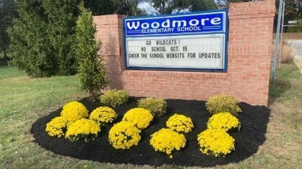
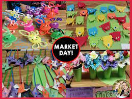

I went to Woodmore Elementary school from grades K-5. Woodmore is located in Maryland. This year they have moved buildings temporarily as they are completing construction. Many of the teachers here shaped how I view learning and taught me to enjoy it. Many of those teachers still work at Woodmore, and I often visit them


One of my best memories at Woodmore was our yearly market day. Students would collect coins throughout the year for good behavior and spend them at market day. Each class would create different products or services that we could buy. The entire school took part and it took up most of the day. I remember creating our own wallets for the activity as well.
Links to Images
- https://www.change.org/p/prince-george-s-county-board-of-education-prince-george-s-county-md-school-boundary-proposed-changes
- https://therigorousowl.com/market-day/